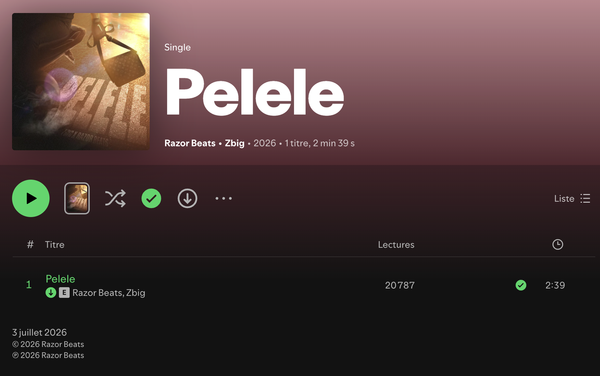

Cover design & art direction
The cover for "Pelele," a single by ZBIG, a rising French rap artist right now, recently featured alongside Jul. Produced in collaboration with Razor Beats, a composer on a similar rise, already trusted by a long list of names across the scene.
ZBIG's momentum right now speaks for itself. A rapidly growing fanbase, and a feature alongside Jul that says a lot about where his career is headed. "Pelele" needed a cover with the same energy: something that feels immediate, a little dangerous, built for a scroll where attention doesn't wait.
This one came together with Razor Beats, a composer whose own reputation has been climbing fast, already trusted by a long list of names in French rap. Two rising trajectories on the same release. The visual had to carry that weight.

Nothing on this cover was shot as a single frame every element was composited by hand in Photoshop: the rider, the bag, the wet asphalt, all brought together and lit as one coherent scene. The golden lens flare sweeping in from the top right sets the temperature for the whole image, and the water on the ground exists specifically to catch and bounce that light back at the viewer.
The title itself is embossed straight into the texture of the asphalt rather than sitting on top of it as a flat overlay, grain, cracks and reflections were rebuilt around the letterforms so "PELELE" reads as part of the street, not a sticker slapped over the photo. That's the difference between a composite that looks assembled and one that looks like a single shot.

The "ZBIG X RAZOR BEATS" credit is treated the same way, in matching handwritten strokes, so the whole composition reads as a single gesture rather than a photo with a logo stamped on top. That's the goal of art direction on a project like this: attitude first, decoration never.
This breakdown exists to show the actual construction of the cover every layer, from the base plate to the final grain pass, revealed one at a time. It's proof that the finished image isn't a single lucky shot: it's dozens of decisions stacked on top of each other, each one earning its place in the final composite.

Four tones pulled directly from the cover, the golden-hour glow, the wet asphalt, and the near-black silhouette that anchors the whole scene.